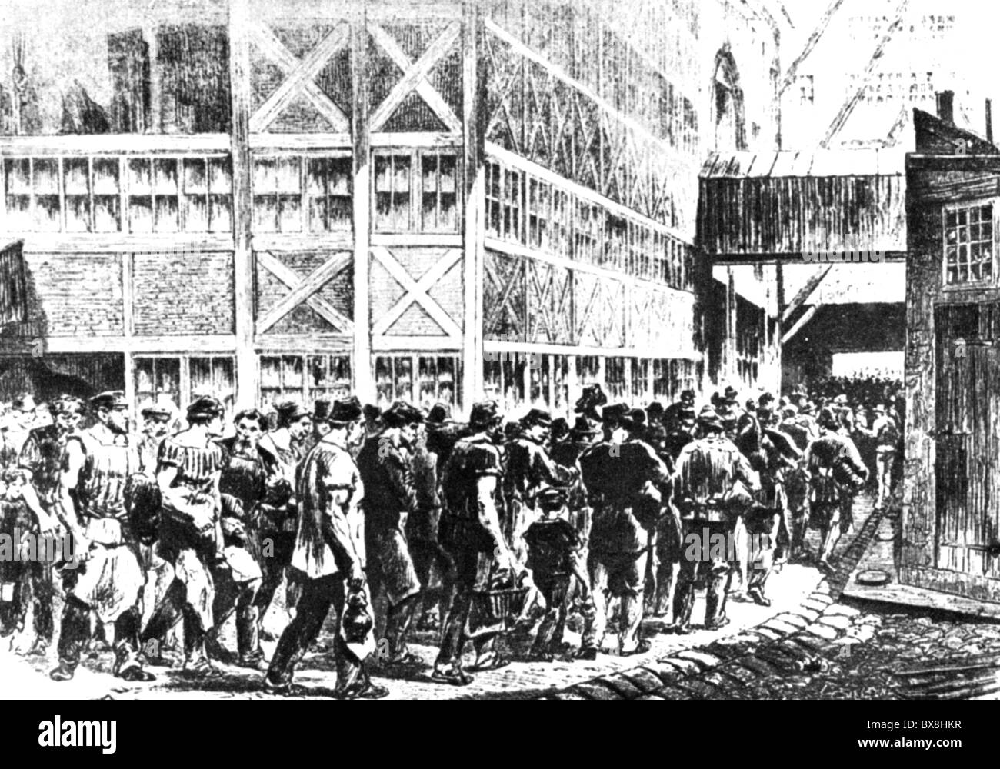
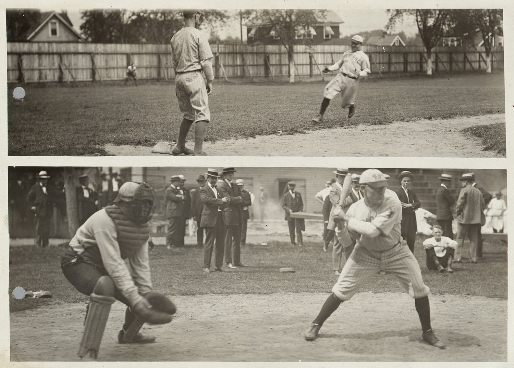
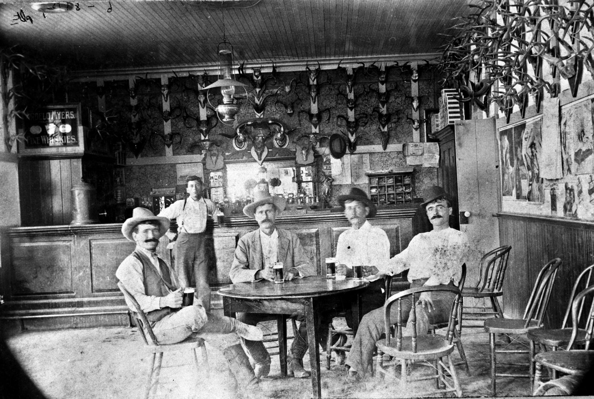
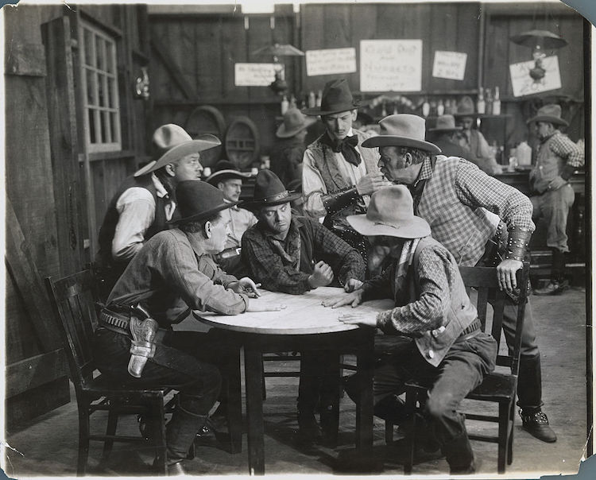
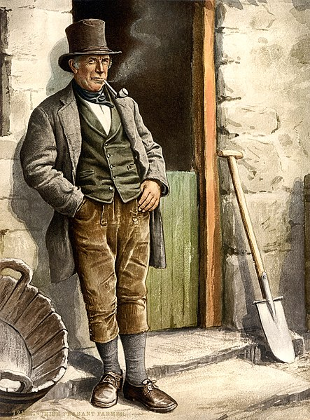
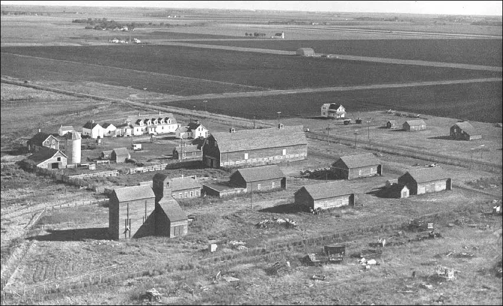
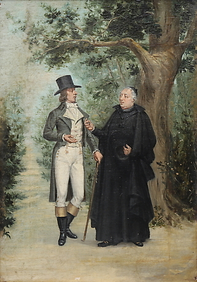

1885 1926 1927 1935-1975 TransitionPart One:
Big Change
Chapter One: I lose my innocenceItalian GuyLittle TownWorkers and FarmersWorkersStrong Self-Confident Ready to SmileFarmersTired Worried Unhappymore about workersLost_Innocence